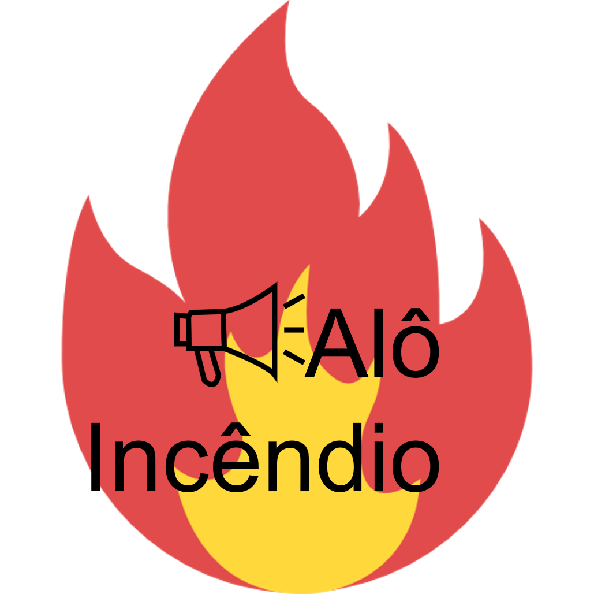

Alô Incêndio
 Alô incêndio é um aplicativo colaborativo gratuito, que permite que a população registre ocorrências de incêndio a partir de fotos tiradas com seus celulares.
O aplicativo combina informações coletadas pelo público e por brigadas de incêndio, e usa moderna tecnologia na nuvem para obter de forma mais precisa a localização dos focos e auxiliar as brigadas no combate.
Desenvolvimento
Parceiros
- PPA
- Ambev